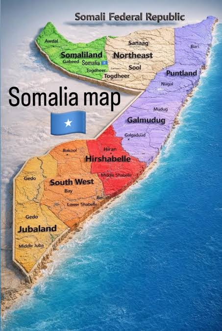
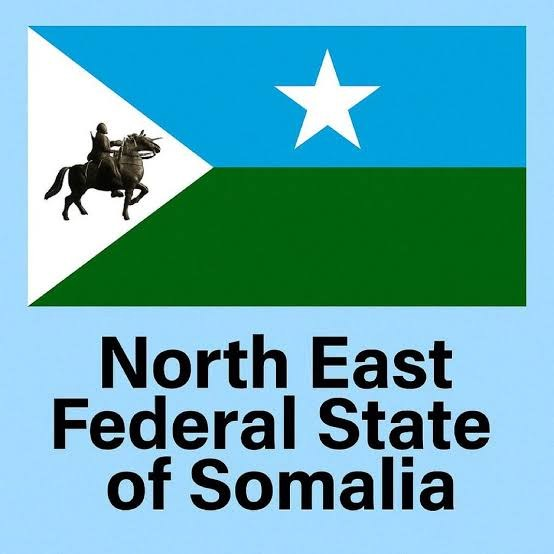

October 19, 2026
The Map We Never Signed

On October 18, Israeli Prime Minister Benjamin Netanyahu's office published a new national security doctrine, nine days before Israel's elections. Behind him on the screen was a map titled "Geopolitical Alliances in the Middle East." It came from a study that two German researchers published through the Friedrich-Ebert-Stiftung in May. The map sorted the region into blocs: an Israel-UAE "Hexagon Alliance," a "Sunni Diamond" of Turkey, Saudi Arabia, Egypt and Pakistan, and an Iran-led "Axis of Resistance."
The Horn of Africa got colored in too. Puntland and Somaliland were painted light blue, as friendly to Israel and the UAE. Somalia and the North East State, where I once served in government, were shaded green, according to Kaab TV and Straturka.
This is not a treaty, and nobody signed anything. But the premise should bother every Somali. A foreign campaign briefing carved our country into pieces and gave each piece a patron. The federal government appeared nowhere as the one voice that speaks for all of it.
Look at where the North East State sits on that map. It shrinks us to a small patch. The federal government's own map of member states, shown below, puts the regions of Sool and Sanaag, and parts of Togdheer, inside the North East State. Our land runs between the two regions painted blue, from Buuhoodle on the Ethiopian frontier to Laas Qoray on the Gulf of Aden, on the same waters that lead to the Bab al-Mandeb. Anyone who wants to split Somalia's north has to go through us. That is why our choice matters. We chose Somalia. Our people paid for that choice, and we made it anyway, because the alternative was a country broken into parts that outsiders could bargain over one at a time.


North East State: the bridge that binds Somalia together.
That is what I mean when I call the North East State the heartbeat of Somali unity. It is not a slogan. It is our place on the map, and a decision we made on the ground.
No wonder President Hassan Sheikh Mohamud, in Las Anod on January 17, 2026 to inaugurate our state’s leadership, declared: “Maanta kadib magaalada Laascaanood waxaa loo aqoonsaday iney tahay Caasimadda Midnimada Soomaaliyeed.” From today, Las Anod is recognised as the Capital of Somali Unity, named by the first sitting Somali president to set foot in the city in more than forty years.
Our foreign relations run through Mogadishu, as every member state's do under our constitution. No institute in Berlin and no slide in Jerusalem can change that. So when a map like this goes up, the North East State will speak for Somali unity, because that is what a heartbeat does. In the north we already do that work every day, side by side with Mogadishu, and gladly.
Somalia's unity and territorial integrity are not negotiable.
One Somalia decides our alignments, not separate regions auditioning for different patrons. We were not consulted, we did not consent, and no one else's security doctrine decides who we stand with.
We know who we stand with. It is each other, and it is Somalia.
NE: keeping up the ties that bind together Somalia.
Reporting on the map: Kaab TV, Straturka, Horn Diplomat and The New Arab, October 19, 2026. On Las Anod as the Capital of Somali Unity: Hiiraan Online and SONNA, January 2026.
Responses
Corrections, counter-arguments and first-hand accounts are welcome. Comments are read before they appear.